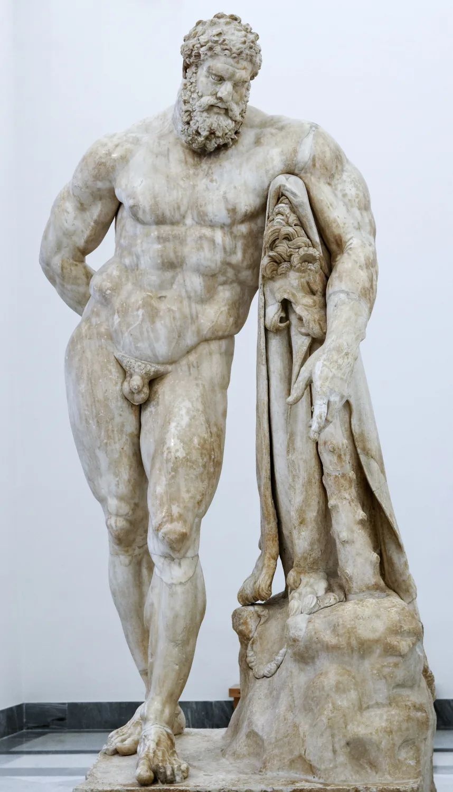
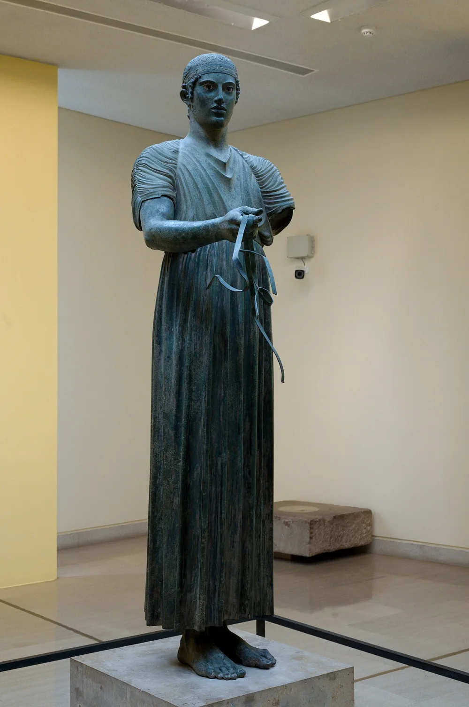
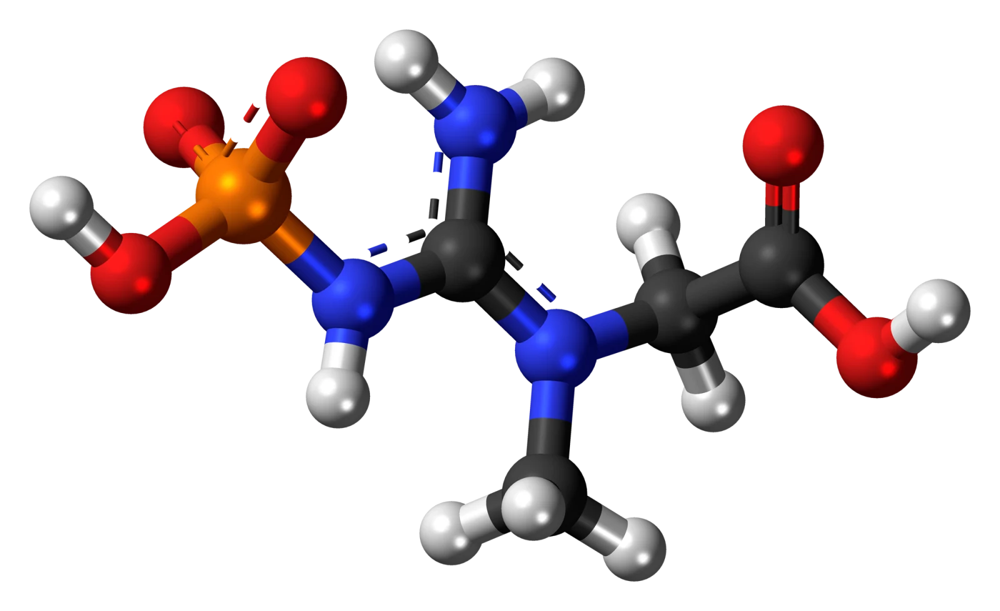
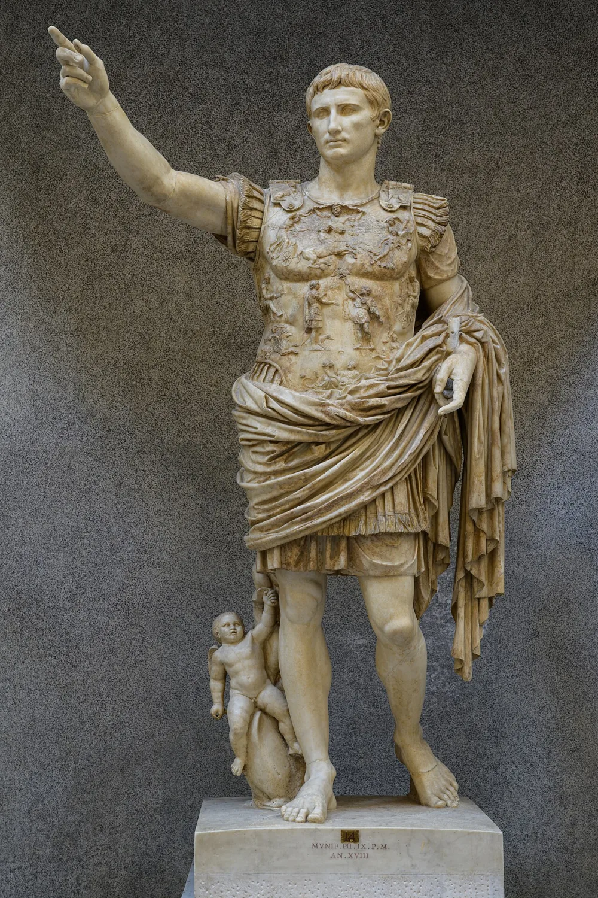

The one-page version
In an eight-week trial, trained adults grew muscle with one set of nine exercises twice a week. More weekly sets generally produce more growth, with smaller returns from each addition. About ten per muscle group is a useful starting point when growth is the priority; fewer can work. ACSM 2026 Hermann 2025 Pelland 2026
The research can help you choose a training dose. Whether another small gain is worth another hour in the gym depends on what you want the muscle for.
Starting estimates for training and general health. They address different outcomes.
The training and protein chapters explain these targets. The sleep recommendation comes from general health guidance, not a measured hypertrophy optimum. AASM/SRS 2015
The supplement aisle, in one glance
Creatine and extra protein have evidence for improving lifting outcomes. Vitamin D and caffeine address different needs.
- Creatine monohydrate. Modestly improves resistance-training outcomes. Possible cognitive benefits are less settled. Use plain monohydrate, 3 to 5 grams a day. Kreider 2017 strong
- Protein powder (only if food falls short). Helps when it raises an inadequate daily intake. Once enough protein is coming from food, adding powder offers less reason to expect extra growth. Morton 2018 strong
- Vitamin D. Correct a diagnosed deficiency with a clinician. Current guidance does not support one universal blood target, and intentional ultraviolet exposure is not a safe vitamin strategy. Use food, fortified food, or a supplement when appropriate. Endocrine Society 2024 AAD strong
- Caffeine. Can improve performance during a session. Evidence for a direct hypertrophy benefit is lacking; lost sleep can make it a poor trade. Guest 2021 good
- Premium creatine forms. No alternative form has convincingly outperformed monohydrate. Antonio 2021 good
The return on another set
A study can compare ten weekly sets with twenty. It cannot tell you that either gets you 90 percent of your lifetime potential. That would require knowing your eventual maximum under years of different training, diets, and recovery conditions.
A 2026 overview examined 137 systematic reviews and more than 30,000 participants. Resistance training worked across a wide range of loads, schedules, and programs. Muscle growth, or hypertrophy, was enhanced by higher volume, summarized as at least 10 weekly sets. Many other prescription details did not consistently change outcomes. The review does not supply one exact optimum for everyone. ACSM 2026 strong
A 2026 review included 67 studies overall. Its muscle-growth models used 35 studies with 1,032 participants to relate weekly volume to growth. The best-fitting model favored more sets with diminishing returns. It did not identify a universal maximum, and a rising fitted curve is not proof that adding sets will help indefinitely. Across the review as a whole, most participants were young adults, and about four in five were male. Pelland 2026 good
| The evidence supports | The evidence does not supply |
|---|---|
| More hard weekly sets usually build more muscle | your exact percentage of genetic potential |
| the marginal gain per added set gets smaller | a universal natural ceiling in pounds |
| training closer to failure is generally more stimulative | one perfect reps-in-reserve target for every exercise |
| people vary greatly in observed response | a reliable year-by-year gain schedule for one person |
Locate your weekly dose
Use the slider to compare your weekly dose with practical starting ranges. Count a set that directly trains the muscle as one, and an assisting role as about half: bench presses for chest and triceps, for example. This bookkeeping method fit the 2026 analysis better than counting all involvement equally. It is an approximation, not a measurement of what every muscle receives.
Weekly sets, one muscle
interactiveThe bands are practical reading aids, not biological borders. Exercise selection, training age, set quality, recovery, and the muscle being trained all move them. ACSM 2026 Pelland 2026
Who decides when it is enough
A 2025 meta-analysis found similar relative muscle growth in men and women, with only a small male advantage in absolute change. That difference does little to predict one person's annual gains. Refalo 2025 strong
Track the result you care about alongside the cost: strength, measurements, session time, fatigue, and discomfort. If more work improves none of those results across a useful stretch of training, the average dose-response curve is not a reason to keep adding it. A competitor may accept costs that someone training for everyday strength would decline.
How muscle actually grows
Muscle grows mainly by enlarging its existing fibers. Resistance exercise starts signals that increase the building of muscle proteins; repeated training and adequate recovery can make the tissue larger. Researchers still disagree about parts of that signaling process. Wackerhage 2019
Tension and soreness
Mechanical tension, the force experienced by active muscle fibers, is the leading candidate for the growth signal. That can come from a heavy load or a lighter set performed with enough effort. Muscle damage is not required, and soreness does not measure how much growth a session will produce. The contribution of metabolic stress, the processes behind the burning sensation, is less certain. Wackerhage 2019 good Bernardez-Vazquez 2022
Weekly volume
Volume is the number of challenging sets a muscle performs each week. In the recent dose-response analysis, counting direct work as one set and indirect work as half a set best fit the observed growth. Pelland 2026 good Older pooled trials also found that groups performing 10 or more weekly sets generally grew more than lower-volume groups. Schoenfeld 2017
Light and heavy loads
One 2017 meta-analysis compared lighter loads, at most 60 percent of a one-repetition maximum (the heaviest weight lifted once), with heavier ones. All sets were taken to failure, the point where another repetition could not be completed. Average hypertrophy was similar; improvement in one-repetition maximum strength favored the heavier loads. Both light and heavy sets can build muscle when performed with enough effort. Schoenfeld 2017 strong
How close to failure
An exploratory 2024 analysis found greater hypertrophy when sets ended closer to failure. Its estimates of how many repetitions participants had left were reconstructed from study descriptions, so the exact relationship is uncertain. Failure is not required. Leaving roughly 2 to 3 repetitions in reserve is a practical default that limits fatigue, rather than a proven optimum. Very light sets may need to finish closer to failure to provide a comparable stimulus. Robinson 2024 ACSM 2026 good
The smaller levers
- Frequency. Once weekly can grow muscle when it delivers enough good work. Two or more sessions are often easier for distributing volume, but frequency has little independent hypertrophy effect when weekly volume is accounted for. Pelland 2026 strong
- Rest between sets. Enough rest helps preserve performance. In an eight-week trial of twenty-one trained men, three-minute rests produced greater thigh growth than one-minute rests; the triceps result was less certain. Extend rests when the next set would otherwise suffer. Schoenfeld 2016 good
- Tempo. A wide range of ordinary repetition durations can build muscle. Use a controlled motion that keeps the target muscle working; deliberately super-slow repetitions appear less effective. Schoenfeld 2015 good
- Progression. When a weight becomes easier, add repetitions or load to keep the sets challenging. A routine can maintain muscle after growth slows; changing exercises is not required simply to make it new.
The part that happens out of the gym
In a laboratory study of thirteen adults, one night without sleep reduced the measured rate of muscle protein synthesis by about 18 percent. That was a short-term measurement after a meal, not an 18 percent loss of muscle or a trial of ordinary six-hour nights. Lamon 2021 limited General health guidance recommends at least seven hours of sleep regularly for most adults. There is no validated formula converting each extra hour into hypertrophy. AASM/SRS 2015
You also do not need to drink protein within thirty minutes of the last repetition. In a protein-timing meta-analysis, the apparent growth benefit was explained by differences in total intake. Meals around training still make sense, especially if you train after a long fast. The daily total matters more than meeting a narrow deadline. Schoenfeld 2013 good
A practical training template
These example programs were assembled for this guide and have not been tested exactly as listed. Their schedules and set totals are shown separately, so you can see how much work each one adds.

Pick the split that fits your life
The "split" is just how you divide the body across the week. More training days do not carry a special hypertrophy bonus. Choose the schedule that lets you complete good work and recover.
Each colored cell is a training day. Any of these schedules can distribute a weekly dose; the six-day example below also adds accessory work.
Where to start
The full-body example trains the major movement patterns three times a week. If you are new, begin with fewer sets while you learn the exercises; the complete table is something to build toward. Keep variations stable enough to compare sessions. When you can complete every set at the top of its rep range with the intended effort, try a small increase in load. Schoenfeld 2020
| Each full-body session, 3x a week | Sets × reps |
|---|---|
| Squat or leg press | 3 × 6-10 |
| Bench or machine chest press | 3 × 6-10 |
| Row (barbell or cable) | 3 × 8-12 |
| Overhead press | 2 × 8-12 |
| Romanian deadlift or leg curl | 2 × 8-12 |
| Lat pulldown or pull-up | 2 × 8-12 |
| Biceps curl and triceps extension, two sets each | 2 each × 10-15 |
That is 19 working sets per session, or 57 across the week. It includes nine direct chest sets, nine squat or leg-press sets, and fifteen combined row and vertical-pull sets. For biceps, six curl sets plus half-credit for those fifteen pulling sets gives about thirteen and a half fractional sets. The total differs by muscle group.
You can build muscle with less. In one eight-week trial, trained adults improved with a single set of nine exercises twice weekly. There was no higher-volume comparison, so the trial does not show what those participants gave up by doing less. Hermann 2025 A review of time-efficient training also supports prioritizing a leg press or squat, an upper-body push, and an upper-body pull when time is short. Iversen 2021 good
A six-day option with more accessory work
Push / pull / legs separates pressing, pulling, and leg work. This example also adds direct work for delts, calves, and the abdomen, so it is a larger program than the full-body table. Choose it if you want those additions and can recover from the extra work.
| Push, Monday and Thursday | Sets × reps |
|---|---|
| Bench press second pass: incline dumbbell press | 3 × 5-8 |
| Seated dumbbell shoulder press second pass: machine shoulder press | 3 × 8-12 |
| Cable fly second pass: pec-deck | 2 × 12-15 |
| Lateral raise, both days | 3 × 12-20 |
| Triceps pressdown second pass: overhead extension | 2 × 10-15 |
| Pull, Tuesday and Friday | Sets × reps |
|---|---|
| Barbell row second pass: cable row | 3 × 6-10 |
| Pull-up or lat pulldown, both days | 3 × 6-10 |
| Chest-supported row second pass: single-arm dumbbell row | 2 × 8-12 |
| Face pull or rear-delt fly, both days | 3 × 12-20 |
| Barbell curl second pass: hammer curl | 3 × 8-12 |
| Legs, Wednesday and Saturday | Sets × reps |
|---|---|
| Back squat second pass: hack squat or leg press | 3 × 5-8 |
| Romanian deadlift second pass: hip thrust | 3 × 6-10 |
| Walking lunge or leg press, both days | 2 × 10-15 |
| Seated leg curl second pass: leg extension | 2 × 10-15 |
| Standing calf raise second pass: seated calf raise | 3 × 8-15 |
| Hanging knee raise or ab wheel, both days | 3 × 10-15 |
The push days contain thirteen working sets, the pull days fourteen, and the leg days sixteen: 86 across the week. Chest receives ten direct sets. Biceps receive six curl sets plus about eight fractional sets from the sixteen pulling sets. Count the other groups in the same way before adding work. The half-set convention is only approximate, especially when an exercise involves several regions of the back or shoulder.
Use the same progression rule as for full-body training. The listed hinges stay on leg days, avoiding heavy deadlifts immediately before another hamstring session.
| The week, in hours | Days | One session | Per week | What it buys |
|---|---|---|---|---|
| Full body, as listed | 3 | 55-75 min | 2.75-3.75 hrs | 57 working sets, major patterns and direct arm work |
| Upper / lower | 4 | varies | varies | a schedule; the weekly dose depends on your exercise list |
| Push / pull / legs, as listed | 6 | 40-60 min | 4-6 hrs | 86 working sets, including more accessory work |
These planning estimates allow for warm-ups, rests, and exercise changes. Equipment queues can extend them. Supersets, alternating compatible exercises, can shorten them without reducing the set total.
Form cues
Good form keeps the target muscle working through a useful range while the load remains repeatable and tolerable. If added weight shortens the range or changes the exercise into a different movement, reduce it. The cues below are practical defaults, not universal anatomy rules:
- Squat: keep your balance over the middle of the foot and let the knees follow the toes. Use the deepest range you can control comfortably; stance and depth depend on your build.
- Deadlift and Romanian deadlift: keep the load close and the trunk braced. In a Romanian deadlift, move the hips back and stop where you can still control the position. A floor deadlift also involves knee extension.
- Bench press: use a stable upper back and planted feet. Lower the bar under control to a comfortable touch point, then press without bouncing. Grip width changes the elbow angle.
- Overhead press: brace the trunk and avoid turning the lift into a large backward lean. Move the head clear of the bar, then return it as the bar passes.
- Row: keep the torso stable, let the arms reach forward under control, and pull through a repeatable range. The elbow path depends on which row you choose.
- Pull-up and pulldown: use a controlled overhead stretch that your shoulders tolerate. Pull without swinging and lower through the same range. A pulldown bar comes toward the upper chest; a pull-up brings your body toward the bar.
Record the exercise, load, repetitions, and estimated repetitions left. Compare several sessions before treating a single bad day as a stalled program.
Keep the cardio
Adding aerobic exercise to a lifting program usually preserves whole-muscle growth in the trials that have compared them. The possible tradeoffs are more apparent for explosive strength and, in some studies, individual muscle-fiber size. A larger biceps does not replace aerobic fitness. Schumann 2022
Cardio and the heart
In a clinical cohort of more than 120,000 people, low measured cardiorespiratory fitness was strongly associated with higher mortality. The least-fit group had about five times the adjusted risk of the elite performers. The participants had been referred for treadmill testing. Illness and other differences between them can affect this association; it does not isolate a causal effect of fitness. Mandsager 2018 good
Adjusted hazard ratios in one clinical cohort. Low fitness is compared with elite fitness; each medical risk factor is compared with its absence. These are not effects of changing one behavior.
In a separate Taiwanese cohort, people reporting about fifteen minutes of daily exercise had 14 percent lower mortality than inactive participants. The study estimated a three-year difference in life expectancy; it did not establish that adding fifteen minutes causes that gain. Wen 2011
The distinction between whole muscles and sampled fibers matters. Reviews found no clear whole-muscle penalty, while a fiber-level review found a small possible reduction, particularly with running. That is a reason to manage fatigue, not to drop cardio. Lundberg 2022 Monserdà-Vilaró 2023 good
General health guidance recommends 150 to 300 minutes of moderate aerobic activity per week, or 75 to 150 minutes of vigorous activity. Some activity is better than none. Build that total with sessions and ordinary movement that you can recover from; separate demanding cardio from demanding leg work when practical. Cycling or walking may be easier to combine with lifting if impact and leg fatigue are limiting you. WHO 2020 The cardio guide covers the larger plan.
Protein and calories
For someone eating enough calories to maintain or gain weight, about 0.7 grams of protein per pound of bodyweight is a reasonable daily starting target. Dieting can justify a higher intake, especially when you are already lean. Neither figure is a personalized measurement of need.
What the protein target means
A meta-analysis of 49 studies with 1,863 participants estimated a breakpoint near 0.74 grams per pound each day, beyond which higher total intake was not associated with additional fat-free-mass gain. Its 95 percent confidence interval ran from about 0.47 to 1.0 grams per pound. Fat-free mass includes water and other lean tissue, and the breakpoint came from comparisons across study groups. It is a population estimate, not a measurement of your personal need. Morton 2018 strong
Estimated breakpoint: about 0.74 g/lb/day. The line shows its 95 percent confidence interval, not a distribution of individual protein needs.
Spreading the total across 3 to 4 meals is practical, but daily intake matters more than perfect timing. Schoenfeld 2018
Your protein target
interactiveFood or powder
Dairy, eggs, fish, meat, soy, and legumes can supply protein alongside other nutrients. Powder is a convenient way to fill a gap in the daily total. Morton 2018
Do you need a surplus?
Muscle can grow near maintenance, and sometimes during a deficit, particularly in less-trained people or those with more stored body fat. A surplus makes weight gain easier, but there is limited research identifying its best size. One eight-week study compared maintenance with intended surpluses of 5 and 15 percent in trained lifters. Only seventeen completed it. Faster weight gain was more clearly related to thicker skinfolds than to greater muscle thickness. Bench-press strength favored the larger surplus, and a possible biceps-growth association was less certain. Helms 2023 limited
If your goal is to gain weight, start with a small increase in food and watch the trend in bodyweight, waist, and gym performance. A rapid rise on the scale does not demonstrate rapid muscle growth.
Creatine, kept in proportion
Creatine monohydrate can add a small improvement to a lifting program. In a 2025 meta-analysis, creatine groups improved bench or chest press strength by about 3 lb and squat strength by about 12 lb more than placebo groups, on average. The effects varied by population and exercise; they are not a promised increase for your next training block. Kazeminasab 2025 strong
Your body makes creatine, primarily through the kidneys and liver, and stores most of it in muscle. Meat and fish also supply it. The stored form, phosphocreatine, helps rapidly regenerate ATP, the molecule that supplies energy for muscle contraction. Supplementation can raise muscle creatine stores by roughly 20 to 40 percent, supporting repeated short, demanding efforts. Kreider 2017 strong
The orange phosphorus atom and surrounding red oxygen atoms form the phosphate group. Transferring that group to ADP, ATP's lower-energy partner, regenerates ATP during high-demand contractions.

Its clearest performance use is repeated high-intensity work, rather than steady endurance exercise. 3-D model by Jynto, Wikimedia Commons (CC0)

Lean-mass measurements also tend to favor creatine plus training. A review in older adults found about 3 lb more lean tissue than with placebo, but lean tissue includes water, which creatine can increase. Chilibeck 2017 A separate analysis of ten studies using regional imaging estimated a small extra thickness gain, around 0.04 to 0.06 inches. Its overall effect estimate was uncertain enough to include no difference. Both groups trained, so this did not isolate a direct effect of creatine from its effect on training performance. Burke 2023 good
Plain monohydrate is sufficient; alternative forms have not shown a convincing advantage. Kreider 2017
- 3 to 5 grams a day usually raises muscle stores over several weeks. Use the measured scoop or a scale, since ordinary teaspoons vary.
- Optional loading uses about 20 grams a day, split into smaller doses, for five to seven days before the maintenance dose. It raises stores faster. A precise pre- or post-workout deadline has not been established.
- The scale may tick up a little, since creatine draws water into muscle. No weight change does not prove it failed.
Cognitive benefits are less settled. A review found possible benefits for short-term memory, with inconsistent results across other tasks. A 2024 experiment during sleep deprivation used fifteen participants and a single large dose, about 25 grams for a 155 lb person. It cannot establish what a routine 3 to 5 gram dose does for a well-rested person. Gordji-Nejad 2024 Avgerinos 2018 limited
Individual differences
The same supervised program can produce very different measured changes. Training history, nutrition, and measurement error contribute alongside genetics.
In Hubal's 2005 study, 585 people completed twelve weeks of supervised training for one arm. Biceps cross-sectional area, measured by MRI, changed from minus 2 percent to plus 59 percent. Curl one-repetition maximum changed from zero to plus 250 percent. Those are results for one measured muscle and lift, not percentages of whole-body muscle gained or genetic potential used. Hubal 2005 good
The reported range of biceps cross-sectional-area change. The endpoints are observations; this line does not reconstruct the distribution of participants.
In Petrella's sixteen-week study, the largest-growth group began with more satellite cells and added more during training. Satellite cells can contribute nuclei to muscle fibers. This association does not predict your personal ceiling. Petrella 2008
Fiber number is uncertain, too
Hyperplasia means increasing the number of fibers, rather than enlarging them. Counting fibers throughout a living muscle is difficult, so studies often estimate their number from whole-muscle area and a biopsy. A 2026 review of eleven studies found no clear increase after resistance training lasting up to six months. A cross-sectional comparison estimated more fibers in long-term trained men, but could not establish whether training created them. Growth mainly through enlargement of existing fibers is well supported; a meaningful adult increase in fiber number remains uncertain. Barton 2026 Maeo 2024 limited
One twin study of 706 postmenopausal women estimated heritability at 52 percent for lean mass and 30 percent for grip strength. Heritability describes how much of the variation within that studied population a genetic model explains. It does not mean that 52 percent of one person's muscle was fixed at birth, and it does not measure the limits of training. Arden 1997 limited
Breaks, losses, and retraining
Bed-rest studies remove most weight-bearing activity. A gym break usually leaves walking and ordinary muscle use intact, so the two situations cannot share one predicted rate of loss.
A review of bed-rest experiments found that loss of knee-extensor size and strength was fastest early on, with strength declining more sharply than size. The rates changed over time, rather than following one daily percentage. Marusic 2021 A review of short-term detraining found more limited declines in strength, even as some muscle and endurance adaptations reversed. Training history, ongoing activity, and illness change the result. Mujika 2000 good
| Observation | What it establishes |
|---|---|
| A 2024 trial used ten weeks of training, ten weeks off, then ten weeks back | lost size and strength returned rapidly; final results were similar to continuous training |
| Mouse experiments retained added muscle-cell nuclei during later atrophy | a possible local memory mechanism, not proof of permanence in people |
| A small human study retained added nuclei after sixteen weeks off | retention, without a clearly superior subsequent training response |
| Human studies found DNA-methylation changes after training and detraining | a possible epigenetic trace; its contribution to faster regrowth remains uncertain |
The retraining trial had 42 completers who began untrained. Its result does not promise a return date for someone with years of training or an illness-related layoff. Halonen 2024 Bruusgaard 2010 Cumming 2024 Seaborne 2018 good
Returning after a break
- A short layoff is usually manageable. One or two missed weeks are unlikely to erase months of progress, although skill and performance can feel rusty on the first sessions back.
- Restart below your old dose. Familiar movements can feel easier than your recovery capacity allows. Increase loads and sets as you establish what you can now repeat comfortably.
- Age changes the stakes. Population estimates suggest muscle mass declines around 1 to 2 percent a year later in life, with strength often falling faster. Individual trajectories vary, and resistance training can help preserve function. von Haehling 2010 good
When does more become harmful?
Research does not locate a natural muscle size at which lifting's health benefits reverse. That uncertainty should not be replaced with professional-bodybuilding mortality figures. Those athletes can have very different exposures, including anabolic drugs and extreme contest preparation.
Greater grip strength is associated with lower mortality in ordinary populations. Grip strength also reflects age, illness, body size, and function; that association does not prove that adding muscle alone extends life. Leong 2015 good
A 2022 meta-analysis found the lowest mortality associations around 30 to 60 minutes of reported muscle-strengthening activity weekly, with less clear benefit at higher amounts. The authors rated the all-cause-mortality evidence very low in certainty. The studies were observational, generally relied on self-reported activity, and supplied little information at high doses. That curve raises a question about training volume; it does not identify a dangerous muscular size or prove that a longer gym session shortens life. Momma 2022 limited
| Natural resistance training | Professional bodybuilding |
|---|---|
| studied through programs, strength, function, and activity | often includes anabolic drugs and polypharmacy |
| hypertrophy returns diminish as weekly volume rises | contest preparation can include extreme leanness and dehydration |
| no established size threshold that reverses health benefits | professionals showed more sudden cardiac deaths than amateurs |
| extra time and fatigue can be tracked; long-term risk is less well mapped | observed medical risk cannot be assigned to muscle mass alone |
What the extreme evidence does show
A 2025 study followed 20,286 male bodybuilding competitors using competition records and web searches for deaths. It identified 121 deaths, including 46 classified as sudden cardiac deaths. Professionals had about five times the sudden-cardiac-death hazard of amateurs. Web searches can miss deaths, and the study could not separate muscular size from drug use or other practices. It is evidence about the sport as practiced, not a controlled comparison of naturally larger and smaller lifters. Vecchiato 2025 good
An autopsy review of bodybuilders who died young found enlarged hearts and thickened walls. Because the sample was selected after death and exposure histories were incomplete, it cannot separate the effects of body mass, anabolic drugs, blood pressure, stimulants, or other practices. The selection prevents it from estimating the risk for all lifters. Escalante 2022 limited
What this changes about “big enough”
For a natural lifter deciding whether to add sets, the clearest costs to assess are time, fatigue, discomfort, and interference with other activities. Avoiding drugs and extreme contest practices removes important exposures, but it does not establish that every amount of natural training is harmless. A universal safe maximum remains unmeasured.
When to change the dose
Increase a dose when the result gives you a reason. If bodyweight rises quickly while waist size increases and performance barely changes, more food is not automatically helping. If fewer sets let you recover and progress again, returning to the higher volume needs a justification.

A plateau does not reveal your genetic ceiling. Before increasing the dose, check whether the current one is being completed, whether the measurements are comparable, and whether recovery has changed. Even after those checks, the evidence cannot tell you in advance how much the next training block will add.
Sources, and how to read them
Sources are linked beside the claims they support. The grades are editorial judgments about each claim, not a formal study-quality assessment. An observational association can be well established while its causal interpretation remains uncertain.
The full list, 54 cited sources, grouped by topic
- Current synthesis and diminishing returns
- ACSM Position Stand (2026). Resistance-training prescription for muscle function, hypertrophy, and physical performance: overview of reviews. Medicine & Science in Sports & Exercise. PubMed
- Pelland JC, et al. (2026). Resistance-training volume and frequency dose-response meta-regression. Sports Medicine. PubMed
- Robinson ZP, et al. (2024). Proximity to failure and hypertrophy: meta-regression. Sports Medicine. PubMed
- Morton RW, et al. (2018). Protein supplementation and resistance training: meta-analysis. British Journal of Sports Medicine. PubMed
- Refalo MC, et al. (2025). Sex differences in resistance-training hypertrophy: systematic review and meta-analysis. PubMed
- Iversen VM, et al. (2021). Time-efficient strength and hypertrophy training: narrative review. Sports Medicine. PubMed
- Hermann T, et al. (2025). Single-set resistance training to failure or with repetitions in reserve. PubMed
- Creatine and supplements
- Kreider RB, et al. (2017). ISSN position stand on creatine safety and efficacy. JISSN. PMC5469049
- Burke R, et al. (2023). Creatine and regional muscle hypertrophy: meta-analysis. Nutrients. PMC10180745
- Kazeminasab F, et al. (2025). Creatine, strength, and power: meta-analysis. Nutrients. PMC12430374
- Chilibeck PD, et al. (2017). Creatine and lean mass in older adults. Open Access Journal of Sports Medicine. PubMed
- Gordji-Nejad A, et al. (2024). Single-dose creatine during sleep deprivation. Scientific Reports. nature.com
- Avgerinos KI, et al. (2018). Creatine and cognition: systematic review. Experimental Gerontology. PubMed
- Lak M, et al. (2025). Creatine, DHT, and hair outcomes: randomized trial. JISSN. PMC12020143
- Syrotuik DG, Bell GJ (2004). Variation in muscle creatine response. Journal of Strength and Conditioning Research. PubMed
- Antonio J, et al. (2021). Common questions and misconceptions about creatine. JISSN. PMC7871530
- Guest NS, et al. (2021). ISSN position stand on caffeine and exercise. JISSN. PMC7777221
- Endocrine Society (2024). Vitamin D for prevention of disease: clinical practice guideline. JCEM. PubMed
- American Academy of Dermatology. Vitamin D and ultraviolet exposure statement. AAD
- Training mechanics and recovery
- Wackerhage H, et al. (2019). Stimuli and sensors that initiate hypertrophy. Journal of Applied Physiology. PubMed
- Bernardez-Vazquez R, et al. (2022). Resistance-training variables and hypertrophy: umbrella review. PMC9302196
- Schoenfeld BJ, Ogborn D, Krieger JW (2017). Weekly set volume and hypertrophy: meta-analysis. Journal of Sports Sciences. PubMed
- Schoenfeld BJ, et al. (2017). Low-load and high-load resistance training: meta-analysis. PubMed
- Schoenfeld BJ, et al. (2016). Rest intervals and hypertrophy. Journal of Strength and Conditioning Research. PubMed
- Schoenfeld BJ, et al. (2015). Repetition duration and hypertrophy: systematic review and meta-analysis. PubMed
- Lamon S, et al. (2021). Total sleep deprivation and muscle protein synthesis. Physiological Reports. PMC7785053
- Schoenfeld BJ, Aragon AA, Krieger JW (2013). Protein timing and hypertrophy: meta-analysis. JISSN. PMC3879660
- Schoenfeld BJ (2020). Science and Development of Muscle Hypertrophy, second edition. publisher
- AASM/SRS (2015). Recommended sleep duration for a healthy adult: joint consensus statement. Sleep. statement
- Cardio and nutrition
- Schumann M, et al. (2022). Compatibility of concurrent aerobic and strength training: updated systematic review and meta-analysis. Sports Medicine. PubMed
- World Health Organization (2020). Guidelines on physical activity and sedentary behaviour. WHO
- Murphy CH, Hector AJ, Phillips SM (2015). Considerations for protein intake in managing weight loss in athletes. European Journal of Sport Science. PubMed
- Mandsager K, et al. (2018). Cardiorespiratory fitness and long-term mortality. JAMA Network Open. JAMA
- Wen CP, et al. (2011). Minimum physical activity and mortality. The Lancet. PubMed
- Lundberg TR, et al. (2022). Concurrent aerobic and strength training and muscle-fiber hypertrophy: meta-analysis. Sports Medicine. PubMed
- Monserdà-Vilaró A, et al. (2023). Concurrent training and muscle hypertrophy: systematic review and meta-analysis. PubMed
- Schoenfeld BJ, Aragon AA (2018). Protein per meal and distribution. JISSN. PMC5828430
- Helms ER, et al. (2023). Energy surplus size and resistance-training outcomes. PMC10620361
- Individual variation, loss, and retraining
- Halonen V, et al. (2024). Periodic and continuous resistance training: adaptations during detraining and retraining. Scandinavian Journal of Medicine & Science in Sports. PubMed
- Hubal MJ, et al. (2005). Variability in response to resistance training. Medicine & Science in Sports & Exercise. PubMed
- Petrella JK, et al. (2008). Satellite cells and different hypertrophy responses. Journal of Applied Physiology. PubMed
- Barton NV, et al. (2026). Human muscle hyperplasia: systematic review and meta-analysis. PubMed
- Maeo S, et al. (2024). Long-term resistance training and estimated fiber number: cross-sectional study. PubMed
- Arden NK, Spector TD (1997). Heritability of lean mass and strength in twins. Journal of Bone and Mineral Research. PubMed
- Marusic U, et al. (2021). Muscle and strength loss during bed rest. Journal of Applied Physiology. PMC8325614
- Mujika I, Padilla S (2000). Detraining, Part I: short-term insufficient training stimulus. Sports Medicine. PubMed
- Bruusgaard JC, et al. (2010). Myonuclei and muscle memory in mice. PNAS. PubMed
- Cumming KT, et al. (2024). Human myonuclei after detraining and retraining: small longitudinal study. PubMed
- Seaborne RA, et al. (2018). Epigenetic memory of human skeletal muscle. Scientific Reports. nature.com
- von Haehling S, et al. (2010). Sarcopenia and age-related muscle loss. PMC3060646
- Strength, mortality, and bodybuilding
- Leong DP, et al. (2015). Grip strength and mortality in the PURE cohort. The Lancet. PubMed
- Momma H, et al. (2022). Muscle-strengthening activity and mortality: meta-analysis. British Journal of Sports Medicine. PMC9209691
- Vecchiato M, et al. (2025). Mortality in competitive bodybuilders. European Heart Journal. PubMed
- Escalante G, et al. (2022). Cardiac findings in deceased bodybuilders. Journal of Functional Morphology and Kinesiology. PMC9781327
How this was made
This is an AI-assisted guide edited by a human enthusiast. The training templates and session times are practical examples assembled for the page. They were not tested as written.
Originally researched June 2026. Sources and calculations reviewed October 2026. This guide concerns healthy adults and does not cover training or supplement treatment for a medical condition.